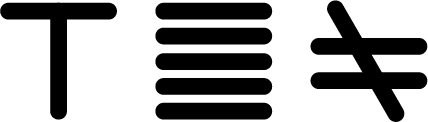
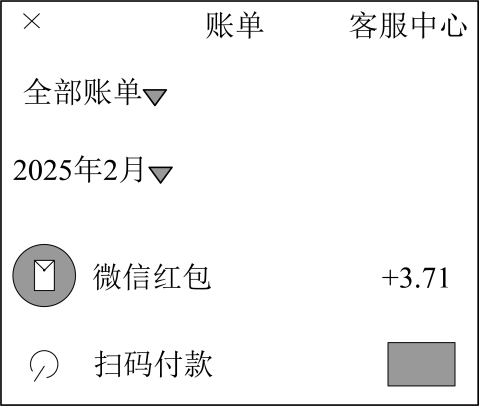
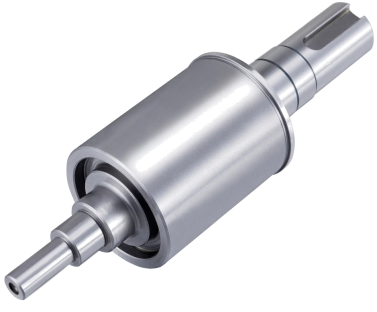
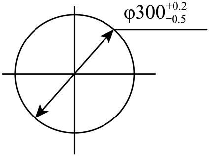
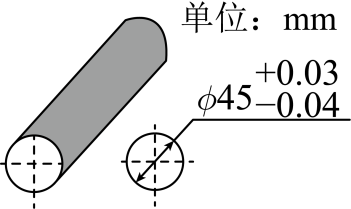
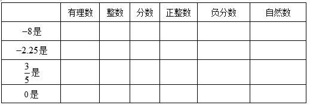
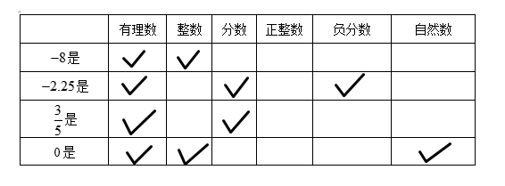
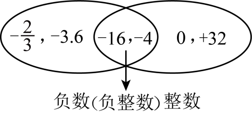
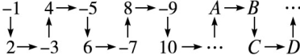
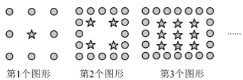

专题2.1 正数与负数、有理数的概念（举一反三讲义）
【北师大版2024】

【题型1 认识正负数】 2
【题型2 用正负数表示相反意义的量】 4
【题型3 正负数比较大小】 5
【题型4 借助正负数的实际意义解决实际问题】 8
【题型5 有理数的概念及分类】 10
【题型6 数的集合】 11
【题型7 有理数与规律探究】 14
知识点1 正数和负数的概念
1.正数和负数的定义：
定义 | 示例 | 补充 | |
正数 | 大于0的数叫做正数.有时，为了明确表达意义，在正数的前面也加上符号“+”（读作“正”） | 3，1.8%，3.5，35都是正数 | 正数前的“+”可以省略不写 |
负数 | 在正数前加上符号“−”的数叫作负数 | −3，−2.7%，−34，−4.5都是负数 | 负数前的“−”不能省略 |
2.注意：0既不是正数，也不是负数.
3.0的意义
（1）0是正负数的分界；
（2）0可以表示“没有”；
（3）0可以用来表示基准，一般地，高于基准的量用数表示，低于基准的量用负数表示.
知识点2 具有相反意义的量
1.定义：在日常生活中，人们常用正数、负数来表示一对具有相反意义的量.
2.表示方法：一般地，对于具有相反意义的量，我们可以把其中一种意义的量规定为正的，并用正数来表示，把与它意义相反的量规定为负的，并用负数来表示.
例如：若规定海平面的海拔高度为0m，珠穆朗玛峰高于海平面8848.86 m,记作+8 848.86 m.
知识点3 有理数
1.定义：正整数、0、负整数统称为整数；正分数和负分数统称为分数；整数可以写成分数的形式；可以写成分数形式的数称为有理数.
2.有理数的分类：
按有理数的定义分类 | 按有理数的性质符号分类 |
|
|

3.各类数的含义：
名称 | 描述 | 名称 | 描述 | |
正整数 | 大于0的整数 | 正整数 | 小于0的整数 | |
正分数 | 大于0的分数 | 正分数 | 小于0的分数 | |
非负数 | 正数和0 | 非正数 | 负数和0 | |
非正整数 | 负整数和0 | 非负整数 | 正整数和0 |
【题型1 认识正负数】
【例1】（24-25六年级下·上海·期末）在−18，912，0，12%，−7.2，−34，π，7中，非负数有（ ）
A．6个 B．5个 C．4个 D．3个
【答案】B
【分析】本题考查了正负数的分类，熟悉掌握有理数的概念是解题的关键．根据非负数的定义逐一判断即可．
【详解】解：在−18，912，0，12%，−7.2，−34，π，7中，
非负数有912，0，12%，π，7共5个，
故选：B．
【变式1-1】（24-25七年级上·河北保定·期末）我国东汉初期的数学家刘徽在注解《九章算术》时，明确提出了正数和负数的概念，比国外早了约800年．刘徽规定正数用红色小竹棒表示，负数用黑色小竹棒表示，则三根黑色小竹棒表示的数是（ ）
A．+3 B．−3 C．0 D．−3
【答案】B
【分析】根据正负数的意义解答即可．
本题考查了正负数的意义，熟练掌握定义是解题的关键．
【详解】解：根据题意，得三根黑色小竹棒表示的数是−3，
故选：B．
【变式1-2】（24-25七年级上·广东佛山·期末）下列语句：①不带负号“－”的数都是正数；②正数前面加上“－”号表示的数就是负数；③不存在既不是正数，也不是负数的数；④0℃表示没有温度，其中正确的有( )
A．0个 B．1个 C．2个 D．3个
【答案】B
【分析】明确“整数”“正”和“负”所表示的意义；再根据题意作答．
【详解】解：①0不带“-”号，但是它不是正数；
②正数前面加上“-”号表示的数就是负数，正确，正数前面加上“-”号表示正数的相反数，故是负数；
③0既不是正数也不是负数，故错误；
④0℃表示有温度，温度为0度，温度可以为负数（零下）也可以为正数（零上）．
综上所述，①③④错误，
故选B
【点睛】此题主要考查了正数、负数、整数、0的意义，理解概念是关键．
【变式1-3】（24-25七年级上·浙江温州·期中）如下表所示，算筹是我国古代的计算工具之一，摆法有纵式和横式两种，横式和纵式都可以表示同一个数，古人在个位数上划上斜线以表示负数．如“ ”表示−723，则“
”表示−723，则“

”所表示的数是 ．
【答案】−652
【分析】本题主要考查了正数和负数，解题的关键是读懂题目，找出数筹和数字的对应关系．
根据题干描述的算筹计数法计数即可．
【详解】
解：根据算筹计数法，“”所表示的数是−652，
故答案为：−652．
【题型2 用正负数表示相反意义的量】
【例2】（24-25七年级上·贵州铜仁·阶段练习）仔细思考以下各对量：①胜二局与负三局；②气温升高3℃与气温为−3℃；③盈利3万元与亏损3万元；④两场篮球比赛，甲、乙两队的比分分别为65：60与60：65．其中具有相反意义的量有（ ）
A．1对 B．2对 C．3对 D．4对
【答案】B
【分析】在一对具有相反意义的量中，先规定其中一个为正，则另一个就用负表示，根据题意逐项分析判断即可求解．
【详解】解：①胜二局与负三局；胜与负具有相反意义，故①符合题意；
②气温升高3℃与气温为−3℃，升高与零下不具有相反意义，故②不合题意
③盈利3万元与亏损3万元；盈利与亏损具有相反意义，故③符合题意
④两场篮球比赛，甲、乙两队的比分分别为65：60与60：65．比分不具有相反意义，故④不合题意
其中具有相反意义的量有①③．
故选：B．
【点睛】本题考查了正数和负数的意义，解题关键是理解“正”和“负”的相对性，确定一对具有相反意义的量．
【变式2-1】（24-25七年级上·福建厦门·期中）在跳远测验中，合格的标准是4.00米，王非跳出了4.12米，记为+0.12米，何叶跳出了3.95米，记作（ ）
A． +3.95米 B． −3.95米 C． +0.05米 D． −0.05米
【答案】D
【分析】根据正负数的意义解答即可
【详解】解：合格的标准是4.00米，王非跳出了4.12米，记为+0.12米，
∵4.00−3.95=0.05，即何叶跳出了3.95米，记作−0.05米，
故选：D．
【点睛】此题考查了正负数的意义，在一个实际问题中，规定一个量为正数，则相反意义表示的量即为负数．
【变式2-2】（2025·辽宁大连·二模）随着国际油价的波动和国内成品油价格调整机制的运行，92号汽油的价格也随之变化．如果每升92号汽油的价格上涨0.2元，记作+0.2元，那么−0.1元表示每升92号汽油的价格（ ）
A．上涨0.1元 B．上涨0.3元 C．下降0.1元 D．下降0.3元
【答案】C
【分析】本题考查了正数和负数，根据上涨记为正数，得到下降记为负数是解题的关键．
由上涨记为正数，可得下降记为负数，进而可得出−0.1元表示每升92号汽油的价格下降0.1元．
【详解】解：∵每升92号汽油的价格上涨0.2元，记作+0.2元，
∴−0.1元表示每升92号汽油的价格下降0.1元．
故选：C．
【变式2-3】（24-25七年级上·北京海淀·期中）如图为小明微信账单．收到微信红包3.71元显示“+3.71”，则扫码付款7.35元，在阴影处显示的是 ．

【答案】−7.35
【分析】本题主要考查了正负数的意义，
根据收到微信红包记作“+”，可知扫码付款记作“−”解答即可.
【详解】解：因为收到微信红包3.71，记作“+3.71”，
所以扫码付款7.35，记作“−7.35”.
故答案为：−7.35.
【题型3 正负数比较大小】
【例3】（24-25七年级上·广东深圳·期末）初中生佳佳为了美观，总是不喜欢穿厚裤子．妈妈规定；每天最低气温在0°C以下或者最高气温在8°C以下，必须穿保暖裤．按照本地天气预报，周一到周日佳佳有几天必须要穿保暖裤？分别是哪几天？
周一 | 周二 | 周三 | 周四 | 周五 | 周六 | 周日 | |
最高气温（°C） | 18 | 9 | 6 | 3 | 2 | 7 | 9 |
最低气温（°C） | 8 | 2 | 0 | −3 | −5 | −1 | 1 |
【答案】周一到周日佳佳有4天必须要穿保暖裤，分别周三、周四、周五、周六
【分析】本题考查了有理数的应用，熟练掌握相关知识点是解题的关键．
对周一到周日的气温数据逐一比对，即可得到答案．
【详解】解：根据表格数据得，
周一：最高气温18°C>8°C，最低气温8°C>0°C，故佳佳可以不穿保暖裤；
周二：最高气温9°C>8°C，最低气温2°C>0°C，故佳佳可以不穿保暖裤；
周三：最高气温6°C<8°C，故佳佳必须穿保暖裤；
周四：最高气温3°C<8°C，最低气温−3°C<0°C，故佳佳必须穿保暖裤；
周五：最高气温2°C<8°C，最低气温−5°C<0°C，故佳佳必须穿保暖裤；
周六：最高气温7°C<8°C，最低气温−1°C<0°C，故佳佳必须穿保暖裤；
周日：最高气温9°C>8°C，最低气温1°C>0°C，故佳佳可以不穿保暖裤；
∴周一到周日佳佳有4天必须要穿保暖裤，分别周三、周四、周五、周六．
【变式3-1】（24-25七年级上·广东深圳·期末）在−0.5，0，3，−1这四个数中，最小的数是 ；既不是正数也不是负数的是 ．
【答案】 −1 0
【分析】本题考查了正负数的意义；根据正数大于0，负数小于0，正数大于一切负数，两个负数，绝对值大的反而小，0既不是正数也不是负数作答即可．
【详解】解：由题可知，−1<−0.5<0<3，
故最小的数是−1，
既不是正数也不是负数的是0，
故答案为：−1，0．
【变式3-2】（24-25六年级下·山东济南·期中）在−2℃，8℃，−32℃，0℃中，最低温度是 ，最高温度是 ，其中−32℃表示 ，读作 ；零下18℃记作 ．
【答案】 −32℃ 8℃ 零下32℃ 负三十二摄氏度或零下三十二摄氏度 −18℃
【分析】本题主要考查了正负数的意义，正确理解题意是解题的关键．
根据正负数表示据有相反意义的量，结合题意即可得出答案．
【详解】解：∵−32<−2<0<8，
∴最低温度是−32℃；最高温度是8℃；
−32℃表示零下32℃，读作负三十二摄氏度或零下三十二摄氏度；
零下18℃记作−18℃，
故答案为：−32℃；8℃；零下32℃；负三十二摄氏度或零下三十二摄氏度；−18℃．
【变式3-3】（24-25七年级上·宁夏银川·期中）下表是今年雨季某防汛小组测量的某条河的一周内的水位变化情况：（“+”表示水位比前一天上升，“−”号表示水位比前一天下降，单位是米）
星期 | 一 | 二 | 三 | 四 | 五 | 六 | 日 |
水位变化/米 | +0.25 | +0.52 | −0.18 | +0.06 | −0.13 | −0.49 | +0.1 |
(1)上周末的水位是73.07米，本周星期一的水位是多少？
(2)在（1）的条件下，本周哪一天河流的水位最高？本周哪一天水位最低？它们位于警戒水位之上还是之下？
(3)与上周末相比，本周末的河流水位是上升了还是下降了，上升了或下降了多少米？
【答案】(1)73.32米
(2)水位最高的是：周二，位于警戒水位以上；最低的是周六，位于警戒水位以下
(3)上升了0.13米
【分析】本题考查的是正负数的实际应用，有理数的加减混合运算的实际应用，理解题意，列出正确的运算式是解本题的关键．
（1）根据周一比上周末上升0.25米，结合正负数的实际意义，列式计算即可；
（2）根据非负数的意义分别计算每天的水位，再比较即可；
（3）用本周末的水位减去上周末的水位即可得到答案．
【详解】（1）解：由题意得，73.07+0.25=73.32米
（2）解：周一水位：73.32米，
周二水位：73.32+0.52=73.84米；
周三水位：73.84−0.18=73.66米；
周四水位：73.66+0.06=73.72米：
周五水位：73.72−0.13=73.59米；
周六水位：73.59−0.49=73.1米；
周日水位：73.1+0.1=73.2米，
则水位最高的是：周二，位于警戒水位以上；
最低的是周六，位于警戒水位以下；
（3）解：河流水位是上升了，73.2−73.07=0.13（米）．
∴上升了0.13米．
【题型4 借助正负数的实际意义解决实际问题】
【例4】（24-25七年级上·河南郑州·阶段练习）某项科学研究，以45分钟为1个时间单位，并记每天上午10:00时间为0，10时以前记为负，10时以后记为正，例如：9:15记为−1，10:45记为1，依此类推，上午6:15记为（ ）
A．−4 B．−5 C．−3.45 D．6.15
【答案】B
【分析】此题主要考查正负数在实际生活中的应用，解题关键是理解“正”和“负”的相对性，确定一对具有相反意义的量．先计算出上午6:15到10:00之间有多少分钟，再计算出有多少个45分钟，然后根据“正”和“负”的相对性，即可计算出正确结果．
【详解】解：上午6:15距10:00有225分钟，225÷45=5，
由于记每天上午10:00时间为0，10时以前记为负，10时以后记为正，
所以上午6:15记为−5．
故选：B．
【变式4-1】（24-25七年级上·山西太原·期中）如图，加工一种轴时，轴直径在299.5毫米到300.2毫米之间的产品都是合格品，在图纸上通常用φ300−0.5+0.2来表示这种轴的加工要求，这里φ300表示直径是300毫米，+0.2表示最大限度可以比300毫米多0.2毫米，−0.5表示最大限度可以比300毫米少0.5毫米．现加工四根轴，轴直径的加工要求都是φ50−0.02+0.03，，下列数据是加工成的轴直径，其中不合格的是（ ）


A．50.02 B．50.01 C．49.99 D．49.88
【答案】D
【分析】根据题意可得出合格的范围，从而可判断出直径是否合格．
【详解】解：由题意得：合格范围为：50−0.02=49.98到50+0.03=50.03，
而49.88mm<49.98mm，
故可得D不合格．
故选D．
【点睛】本题考查正数和负数的知识，题目出的比较好，注意先求出合格的范围是关键．
【变式4-2】（24-25七年级上·辽宁鞍山·阶段练习）如图是加工零件的尺寸要求，现有下列直径尺寸的产品（单位：毫米）：①Φ44.9；②Φ45.02；③Φ44.99；④Φ45.01．其中不合格的是 ．（填写序号）

【答案】①
【分析】本题主要考查的是正数和负数的意义，根据正负数的意义求得零件直径的合格范围是解题的关键．依据正负数的意义求得零件直径的合格范围，然后找出不符要求的选项即可．
【详解】解：∵45+0.03=45.03，45−0.04=44.96，
∴零件的直径的合格范围是：44.96≤零件的直径≤45.03，
∵Φ44.9不在该范围之内，
∴不合格的是①，
故答案为：①．
【变式4-3】（24-25七年级上·安徽合肥·期中）纽约、悉尼与北京的时差如下表（正数表示同一时刻比北京早的时数，负数表示同一时刻比北京晚的时数）：当北京10月8日15时，悉尼、纽约的时间分别是（ ）
城市 | 悉尼 | 纽约 |
时差/时 | +2 | −13 |
A．10月8日13时；10月9日4时 B．10月8日17时；10月8日2时
C．10月8日17时；10月9日4时 D．10月8日13时；10月8日2时
【答案】B
【分析】由统计表得出：悉尼时间比北京时间早2小时，也就是10月8日17时．纽约比北京时间要晚13个小时，也就是10月8日2时．
【详解】解：悉尼的时间是：10月8日15时+2小时=10月8日17时，
纽约时间是：10月8日15时-13小时=10月8日2时．
故选：B．
【点睛】本题考查了正数和负数．解决本题的关键是根据图表得出正确信息，再结合题意计算．
【题型5 有理数的概念及分类】
【例5】（24-25七年级上·浙江杭州·阶段练习）下列说法中：（1）一个整数不是正数就是负数；（2）最小的整数是零；（3）负数中没有最大的数；（4）自然数一定是正整数；（5）有理数包括正有理数、零和负有理数；（6）整数就是正整数和负整数；（7）零是整数但不是正数；（8）正数、负数统称为有理数；（9）非负有理数是指正有理数和0．正确的个数有 个．
【答案】4
【分析】本题考查了有理数的概念和分类，根据有理数的概念和有理数的分类，正、负数依次进行判断即可．
【详解】解：整数分为正整数，0和负整数，
∴一个整数不是正数就是负数错误，故（1）不符合题意；
没有最小的整数，故（2）不符合题意；
负数中没有最大的数，故（3）符合题意；
自然数包括0，∴自然数一定是正整数错误，故（4）不符合题意；
有理数包括正有理数，零和负有理数，故（5）符合题意，
整数包括正整数，0和负整数，故（6）不符合题意；
零是整数但不是正数，故（7）符合题意；
整数和分数统称为有理数，故（8）不符合题意；
非负有理数是指正有理数和0，故（9）符合题意，
综上所述，正确的有（3）（5）（7）（9），共4个，
故答案为：4．
【变式5-1】（24-25七年级上·湖北武汉·期末）下列关于“0”的叙述中，不正确的是（ ）
A．表示“没有”，但有实际意义，是“正数”与“负数”的分界
B．既不是正数，也不是负数
C．是整数，也是最小的自然数
D．不能写成分数的形式，不是有理数
【答案】D
【分析】本题考查了有理数，0是重要的数，掌握有理数的相关概念和分类是解题的关键．依据0的含义以及有理数分类逐一判断即可．
【详解】解：A、表示“没有”，但有实际意义，是“正数”与“负数”的分界，故此选项正确，不符合题意；
B、0既不是正数，也不是负数，故此选项正确，不符合题意；
C、0是整数，也是最小的自然数，故此选项正确，不符合题意；
D、0能写成分数的形式，是有理数，故此选项错误，符合题意；．
故选：D．
【变式5-2】（24-25七年级上·江苏常州·期中）下列各数：0.5，2π，1.264850349，0，227，0.2121121112…（相邻两个2之间1的个数逐次加1），其中有理数有 个．
【答案】4
【分析】本题考查有理数．根据整数和分数统称为有理数，进行判断即可．
【详解】解：0.5，2π，1.264850349，0，227，0.2121121112…（相邻两个2之间1的个数逐次加1），其中有理数有0.5，1.264850349，0，227，共4个；
故答案为：4．
【变式5-3】（24-25七年级上·甘肃平凉·期中）现给出如下有理数：−1.1，0，−0.8，−313，5．其中负有理数的个数是（ ）
A．4个 B．3个 C．2个 D．1个
【答案】B
【分析】本题考查有理数的分类，根据负有理数包括负整数和负分数，进行判断即可．
【详解】解：−1.1，0，−0.8，−313，5中，负有理数有−1.1，−0.8，−313，共3个；
故选B．
【题型6 数的集合】
【例6】（24-25七年级上·山东济宁·期中）把下列各数填在相应的括号里．
−3，213，0，−π2，0.1010010001，−12%，6，−0.3，3.14，−27
整数集合：{ …}
负分数集合：{ …}
非负有理数集合：{ …}
【答案】见解析
【分析】本题主要考查了有理数分类，熟练掌握有理数的相关概念和分类，是解答本题的关键．根据整数、分数、正数、负数以及非负有理数的定义解答即可．
【详解】解：−3，213，0，−π2，0.1010010001，−12%，6，−0.3，3.14，−27．
整数集合：{ −3，0，6}；
负分数集合：{ −12%，−0.3，−27}；
非负有理数集合：{ 213，0，0.1010010001，6，3.14}．
【变式6-1】（24-25七年级上·河北邯郸·期中）在表中符合条件的空格里画上“√”.

【答案】

【分析】根据有理数的分类，分别对：-8，-2.25，35，0进行分类判断即可.
【详解】解：-8属于有理数、整数；-2.25属于有理数、分数、负分数；35属于有理数、分数；0属于有理数、整数、自然数.
【点睛】本题考查了有理数，熟练掌握有理数的分类是解题的关键.
【变式6-2】（24-25七年级上·安徽六安·期末）把下列各数填入图中相应的位置，并填写公共部分的名称．
−16，0，−23，−4，−3.6，+32
【答案】见解析
【分析】本题主要查了有理数的分类．根据有理数的分类解答即可．
【详解】解：如图：

【变式6-3】（24-25七年级上·广东深圳·期中）将下列各数填入适当的括号内：
5，−3，34，8.9，π，−67，−3.14，−9，0，235
(1)正有理数集合：{ …}
(2)负有理数集合：{ …}
(3)整数集合：{ …}
(4)分数集合：{ …}
【答案】(1)5，34，8.9，π，235，
(2)−3，−67，−3.14，−9，
(3)5，−3，−9，0，
(4)34，8.9，−67，−3.14，235，
【分析】此题考查了有理数的分类，根据有理数的分类方法进行解答即可.
（1）根据正有理数的意义进行解答即可；
（2）根据负有理数的意义进行解答即可；
（3）根据整数的意义进行解答即可；
（4）根据分数的意义进行解答即可.
【详解】（1）解：正有理数集合：{5，34，8.9，π，235，…}
（2）解：负有理数集合：{−3，−67，−3.14，−9，…}
（3）解：整数集合：{5，−3，−9，0，…}
（4）解：分数集合：{34，8.9，−67，−3.14，235，…}
【题型7 有理数与规律探究】
【例7】（24-25七年级上·广东茂名·阶段练习）将一串有理数按下列规律排列，回答下列问题：

(1)在A处的数是正数还是负数？
(2)负数排在A，B，C，D中的什么位置？
(3)第2 028个数是正数还是负数？排在对应于A，B，C，D中的什么位置？
【答案】(1)正数;(2)B、D;(3)正数，A.
【分析】由数字排列规律可知：A是正数，B是负数，C是正数，D是负数.每4个数一循环.
【详解】解：(1)在A处的数是正数．
(2)负数排在B，D的位置上．
(3)2028=4×507,所以第2 028个数是正数，排在对应A的位置上．
【点睛】本题考核知识点：数列规律. 解题关键点：观察规律，找出循环，注意符号.
【变式7-1】（24-25七年级上·浙江杭州·阶段练习）观察下列各数：−12,23,−34,45,−56，⋯，根据它们的排列规律写出第2024个数为 ．
【答案】20242025
【分析】根据目中所给分数的特征，总结规律即可得解．
【详解】解：∵−12，23，−34，45，−56，…，
∴每一项的符号是奇数位置为负，偶数位置为正，分子是所在位置的序号，分母比分子大1，故第2024个数为20242025，
故答案为：20242025
【点睛】此题考查数字的变化规律，发现数字之间的联系，找出数字之间的规律，利用规律解决问题．
【变式7-2】（24-25九年级上·甘肃庆阳·期末）下列图形都是由完全相同的圆点“●”和五角星“★”按一定规律组成的，已知第1个图形中有8个“●”和1个“★”，第2个图形中有16个“●”和4个“★”，第3个图形中有24个“●“和9个“★”，…，则第 个图形中“●”的个数和“★”的个数相等．

【答案】8．
【分析】解题时根据前3个数据理清规律就可以得到结果
【详解】根据前3组数据的规律，可以得到下面的数据：
● ★
第4个图形 32 16
第5个图形 40 25
第6个图形 48 36
第7个图形 56 49
第8个图形 64 64
故答案为第8个
【点睛】此题重点考查学生对数据规律的探索能力，根据前3个数据找出规律是解题的关键
【变式7-3】（24-25七年级上·山东青岛·期末）观察下面一列数：−1,2,−3,4,−5,6,−7,8,−9，…．
(1)请写出这一列数中的第100个数和第2026个数．
(2)在前2026个数中，正数和负数分别有多少个？
(3)2025和−2025是否都在这一列数中？若在，请指出它们分别是第几个数；若不在，请说明理由．
【答案】(1)第100个数是100，第2026个数2026
(2)分别有1023个
(3)2025和−2025不能都在这一列数中，理由见解析
【分析】（1）由题意可得：这一列数是正负相间的连续整数，且奇数项为负，规律是：−1n，由此即可解答；
（2）在前2026个数中，正数和负数的个数相等，即可得出答案；
（3）由规律可得：−2025在这一列数中，但2025不在这一列数中，进而可得答案．
【详解】（1）由题意可得：这一列数是正负相间的整数，且奇数项为负，规律是：−1n·n，
所以第100个数是100，第2026个数2026；
（2）在前2026个数中，正数和负数的个数相等，分别有1023个；
（3）由规律可得：−2025在这一列数中，但2025不在这一列数中，
所以2025和−2025不能都在这一列数中．
【点睛】本题考查了数字类规律探寻，由题意归纳出规律是关键．